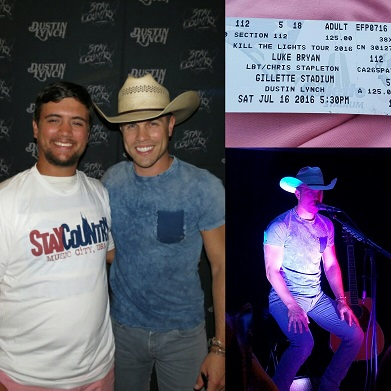
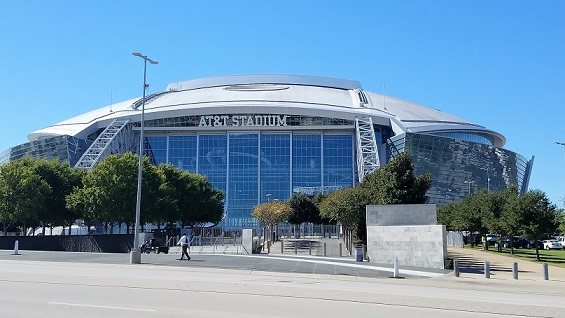
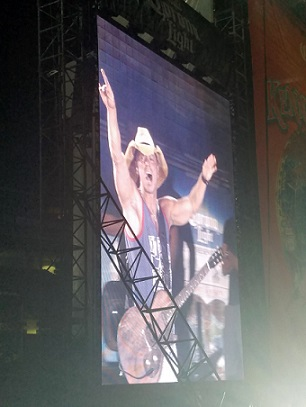
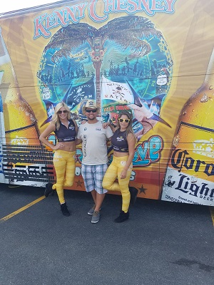
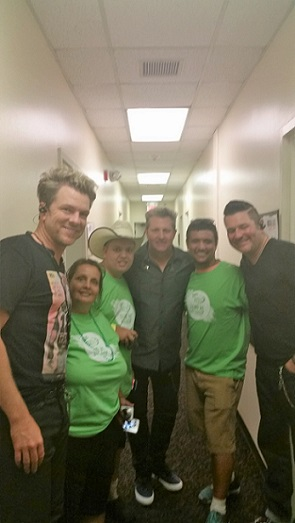
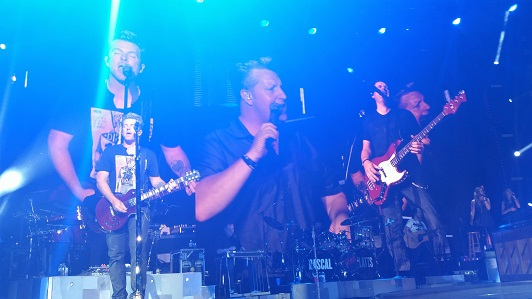

This is Maren Morris, shes a new coming country artist and was also on tour with Keith, she has already a few country music awards. With only one new record out she has touched millions of people and inspired hundreds more. She is beautiful and has an amazing voice and can't wait to meet her again.
This is Dustin Lynch, he was on tour with Luke Bryan, little Big Town and Chris Stapleton. They were all amazing but I only got to meet Dustin. He is very country and super nice to his fans and you couldnt ask for more. Not only did I meet him at Gillette Stadium, I travelled all the way to Dallas Texas to see the tour and it was so amazing down there.
I think that even if you don't like country music you have to know who this man is. If you dont this is one of the most energetic country artists Iv'e ever seen Kenny Chesney, althought I didn't get to meet him this time around its always going to be a dream of mine. The girls of Corona were to represent the tour also so I snapped a picture with them too.
Alittle over a year ago I went to see this group Rascal Flatts, they always know how to put on a show for their fans. Meeting them though it was unexpectd it was amazing. They have over ten albums and have been doing the thing they love for over sixteen years, they have sold over 50 million copies of all their music and have had 13 number one singles. The group comes back every year and are always fun to go see, energetic and inspirational they know how to put on a show.